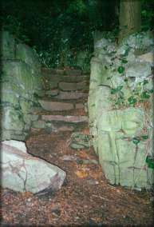

|

Through the Gates `Narnia, Narnia, Narnia, awake. The warden does not speak again, so, after a couple of minutes, you edge gingerly around it and walk towards the gate. To your surprise it's unlocked and opens easily to let you through. On the far side - you stop and gape - totally overwhelmed by the view... Before you, the narrow gorge opens into the deep edged bowl of a extinct volcano. It's huge, perhaps 10 miles in diameter and you're high up on the north-eastern cliff wall. Below you, a thick patchwork of forest and open grassland covers the flattened floor. On both sides, the crater walls mark out a enormous skewed circle - the far wall appears to have collapsed, it's rather hard to tell at this distance. The only way down appears to be a long zigzagging path, which rapidly disappears into the trees, though there seems to be a game trail to your left. Alternatively of course, you could just wait. You notice that the Guardian has followed you through the gate, (despite being apparently made of ceramic, it seems to have no difficulty moving). It stares - unblinking - straight at or rather, through you. It's all rather unnerving and you resolve not to annoy it (him/her?) |

 © Michael.Wright 1999 karne@innocent.com
© Michael.Wright 1999 karne@innocent.com
(8=:[ plaintive plea - please don't steal my art work! ]:=8)

 |